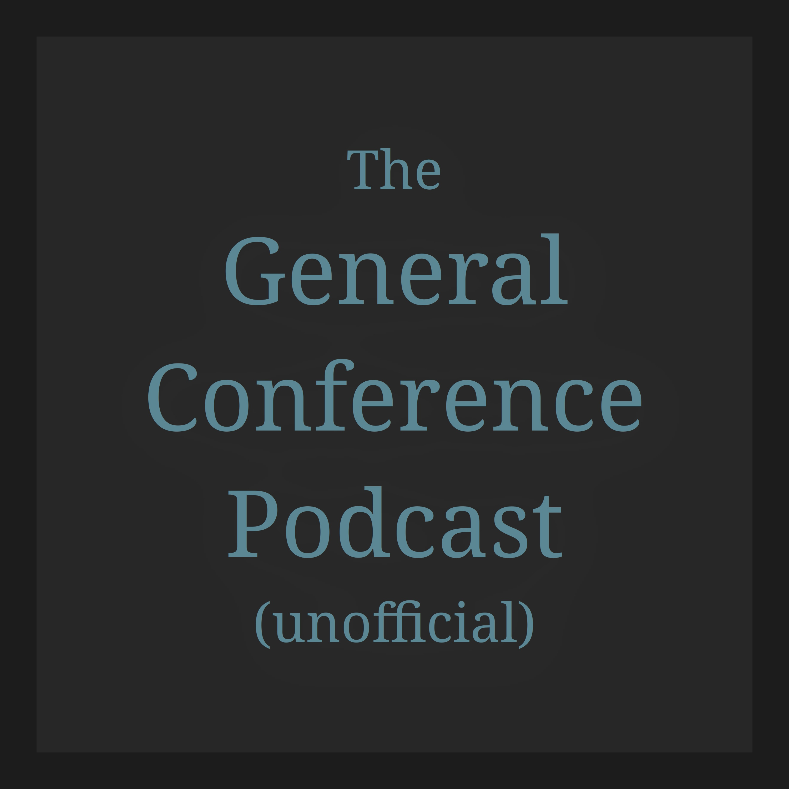

Unofficial General Conference podcast
General Conference talks
Conference audio from 1971 to today, organized by conference and ready for the podcast app you already use. Each episode links back to the original talk.
Listen in your app
Select an app below. For app links that cannot provide a web fallback, the RSS address is copied before the app opens.
- Apple PodcastsOpen app ↗
- OvercastOpen app ↗
- Pocket CastsSubscribe ↗
- AntennaPodSubscribe ↗
- Podcast AddictOpen app ↗
- CastroOpen app ↗
- DowncastOpen app ↗
Open and portableStandard RSS 2.0 with Podcasting 2.0 metadata. You can also open the feed directly.
Original audioAudio is served from Church-owned URLs. This site does not copy or rehost the recordings or talk text.